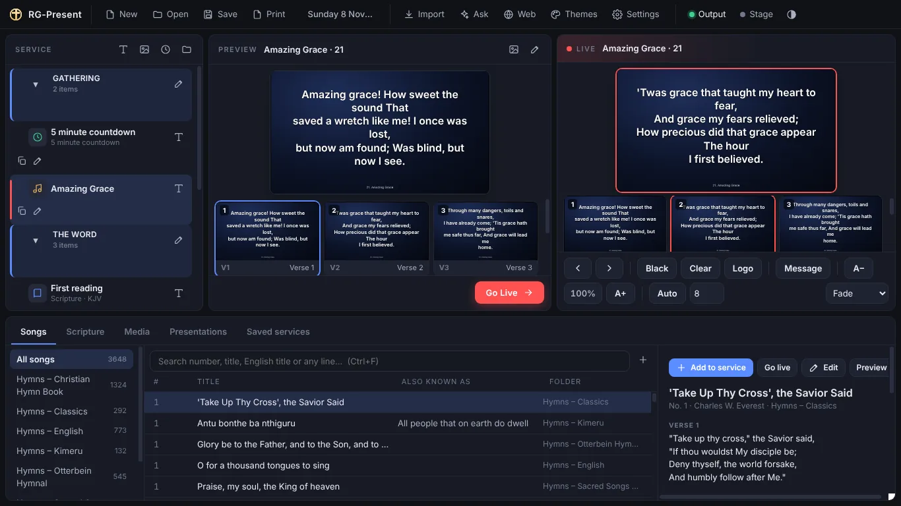
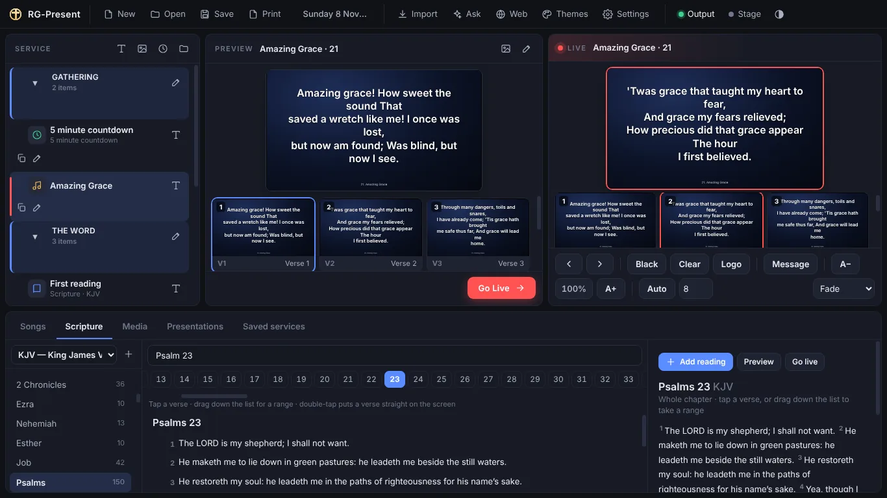
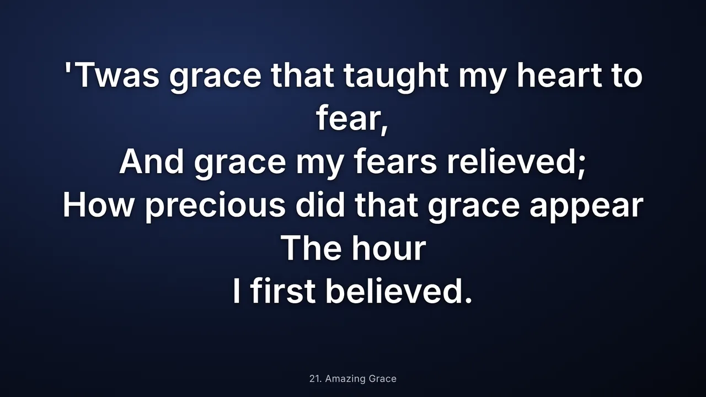

Put the words on the screen, without the fuss.
RG-Present shows song words, scripture, slides and video on your projector during a live service. It works with no internet, starts fast, and keeps the congregation looking at the slide — never at your desktop.

It follows the way a service actually runs
Find it, put it in the order of service, cue it, send it to the screen. The same four steps whether it is a hymn, a reading, a notice, a video or somebody's PowerPoint.
1 · Find it
Type a hymn number, a title, an English title or any line you can remember. Type jn 3 16 or Ps 23 for a reading. Results appear as you type, even with thousands of songs in the library.
2 · Build the order
Drag what you need into the service, give the lines the names your church uses — First reading, Offertory, Notices — and group them under headings. Save it, print it, open last year's at Christmas.
3 · Cue it
Preview shows the operator what is coming without touching the projector. Double-tap anything in the library and it goes straight to the screen, which is what you want when the pastor names a verse you were not expecting.
4 · Run it
Space for the next slide, B to black the screen, C to leave the background and take the words away. The next slide and its background are ready before you ask for them.
What comes with it
Everything below is already in the download. Nothing to set up an account for, and nothing that stops working when the internet does.
3,648 hymns
The Christian Hymn Book, Sacred Songs & Solos, the Wesleyan Methodist Hymn Book, the Otterbein Hymnal, the Open Hymnal and Iuku ria Rwimbo in Kimeru. All public domain, each one keeping its source and copyright line.
The King James Version
All 31,102 verses, going on the screen one verse at a time with the reference big enough to read from the back row. Put a second translation on the same slide for a bilingual congregation. Translations your church is licensed to use can be imported.
Pictures and video that fill the screen
A background or a video fills the projector edge to edge — no black bars, whatever shape the file is. Video has its own play, loop and sound buttons while it is live.
PowerPoint and PDF
A deck is brought in as pictures, one per slide, so it still shows on Sunday after the laptop it was made on has gone home. Drop it in the service beside the hymns.
Themes you can change
Font, size, colour, alignment, shadow, the safe area and the background. Give scripture a theme of its own so a reading never looks like a hymn.
A stage display for the musicians
The current slide, the one coming next, a clock and the notes you left for the people at the front — on a screen the congregation never sees.
Music under the service
Play something quietly before the service and fade it out when the first slide goes up. It keeps playing while you work, and stops when you say so.
Countdowns and messages
A countdown to the start of the service, and a message you can put across the screen — a car to move, a child to collect — without losing the slide underneath.
A browser that stays off the projector
Search the web in a window of its own, on your screen, then show the page to the congregation only when you choose to. The open web can never reach the service.
Your own songs
Type them in, or import a folder of TXT, CSV, Word or PowerPoint files. Colour, italicise or resize single words. Verses, choruses and bridges are picked out for you.
Saved services
Every service is kept, searchable and reusable, with the order printable for the people leading it. A power cut does not lose your morning's work.
Updates that wait their turn
A new version downloads quietly and installs when you close the program — never during a service. Your songs, services and settings are kept separately and are never touched by an update.

The congregation only sees the finished thing
The rules the program is built on, in the order they matter.

- No cursors, no dialogs, no error messages on the projector. If something goes wrong it is reported on the operator's screen, and the audience screen stays on its last good slide.
- Nothing interrupts a live service. No update prompts, no restarts, no boxes to dismiss while something is on the screen.
- It works with no internet. The hymns, the Bible, your media and your services are all on the machine. Only the web browser and the update check need a connection.
- The next slide is instant. It and its background are prepared before you press the key.
- It fits the laptop you already have. The whole window works at 1366×768 — the common church laptop here — and scales up from there.
- Only legal content is shipped. Every bundled hymn book and Bible is public domain, and keeps its source and licence with it. A translation your church holds a licence for is imported by you, never shipped by us.
Optional: the helpers, using your own Google key
RG-Present is complete without this, and it is switched off until you paste a key of your own into Settings. Nothing is sent anywhere until you ask a question.
Find a hymn you half remember
Describe it — “something about the river for a baptism” — and get suggestions from your own library, with the hymn numbers, ready to add. Nothing is invented: if it is not in your library, it is not offered.
Readings for a theme
Ask for passages about forgiveness and you get references, which your own Bible then supplies the words for. The words on the screen always come from the translation installed on your machine, never from a model.
A plan for the whole service
Describe the Sunday and get a draft order — hymns, readings, notices — which you then edit like any other service. You decide what stays.
Notes into slides, and backgrounds
Paste the notices and have them broken into slides. Generate a background picture from the theme of the service, if your Google account has image generation enabled.
Already running an older RG-Present?
Install this over the top. Your songs, saved services, imported Bibles and media are kept where they are, and the first run offers to bring an older library across for you. Nothing is deleted and nothing is overwritten.
What it costs
Free for the first two weeks, then whichever of these suits your church. Pay from inside the program with M-Pesa and the licence turns on by itself; no card, no account, no waiting for anyone at RG Devs to do anything.
One Sunday — KES 300
Seven days from the moment you pay, so the Saturday setup and the Sunday service are both covered. For a church that only needs it now and then.
One month — KES 700
Every service for a month, including the midweek ones. The usual choice.
One year — KES 7,000
Twelve months for the price of ten.
Lifetime — KES 30,000
Paid once. No renewals, ever.
- Two weeks free, on every computer. The full program, nothing held back, no payment details asked for.
- Already using RG-Present? It keeps working free on that computer for 90 days after the update reaches you, so no church is ever caught out on a Sunday.
- A licence covers one computer. A second machine in the same church needs its own. Ask us if you are moving to a new laptop and we will move the licence.
- Nothing stops mid-service. If a licence runs out while a hymn is on the screen, the service carries on to the end. Only the next thing to go up waits.
- Everything else keeps working without a licence — the library, editing songs, building and printing the order of service. Only the projector waits.
What you need
Windows 10 or 11, 64-bit
Any laptop from the last decade or so. RG-Present does not run on 32-bit Windows, macOS or Linux.
4 GB of memory
8 GB is more comfortable if other things are running during the service. Built-in Intel graphics are fine.
A second screen
A projector or TV on HDMI, set to Extend rather than Duplicate, so the congregation sees the slides and you keep your controls.
About 400 MB of disk
Plus room for your own pictures and video. Your library and settings live in a folder of their own, so an update never touches them.
Help
- Setup guide
- Read it here, or download the PDF to print
- -
- All versions
- Release history and older builds